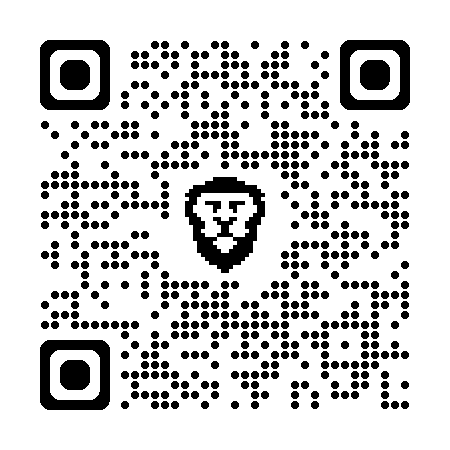

About
I develop experimental technologies at the intersection of AI and blockchain.
My work is driven by curiosity, self-directed learning, and building tools that anticipate future needs.
Projects
-
Decentralized Time Tracking App
An experimental Android app for blockchain-based time tracking using Vechain. Features:
- In-app generation of Vechain wallet
- Storing working hours via smart contract
- GPS-based clock-in zone with adjustable radius
- Direct sync with smart contract instead of central database
- Admin area for employers to review recorded hours
Skills
- Solidity
- Hardhat
- Android SDK
- Smart Contracts
- Blockchain Development
- GPS / Location Services
- Web3.js / Ethers.js
- Python (AI Basics)
- Git / GitHub
Experience
-
Self-Directed Researcher & Builder, 2021–present
- Conceptualization and development of experimental blockchain applications
- Prototyping AI integration for automated transaction validation
- Ongoing documentation and open-source code sharing on GitHub
Education
Autodidactically built expertise in blockchain and AI through hands-on implementation.
